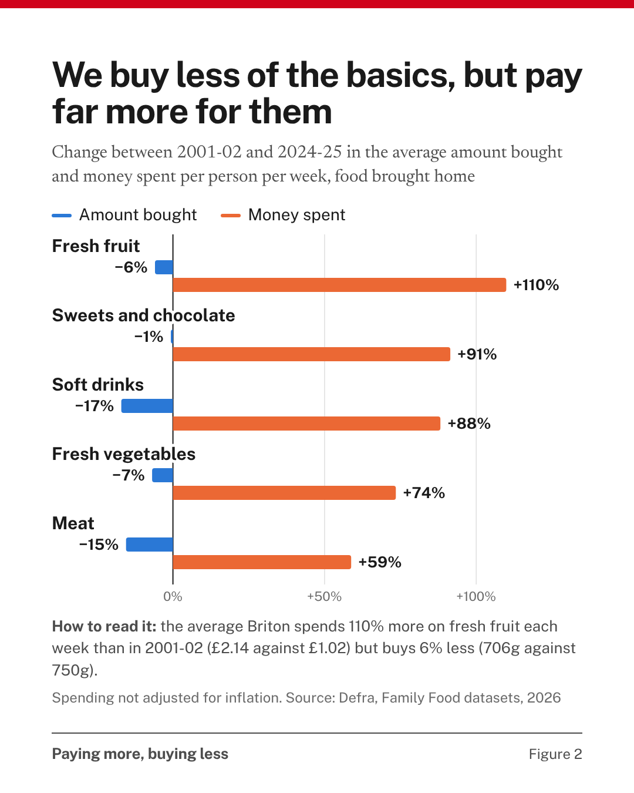

Britons are paying more than ever for their weekly shop – and taking home less
Government figures covering almost a quarter of a century show households buying less fruit,
vegetables and meat, while the price they pay for every kilo has soared.
By Joris Gonin
Fresh fruit tells the story in a single aisle. In 2001-02, the average person in the UK spent £1.02 a
week on it and took home 750g. By 2024-25, the weekly spend had more than doubled, to £2.14, for 706g.
The same is true across the basket. According to the government's Family Food survey, households now
buy less fresh fruit, vegetables, meat, sweets and soft drinks than at the start of the century, yet
spend between 59 and 110 per cent more on them. These figures are not adjusted for inflation, but they
show how far the cost of the weekly shop has run ahead of what ends up in the cupboard.
The interactive chart below (Figure 1) follows these five everyday items through three crises. Each
line starts at 100: below 100, households are buying less than in 2001-02. Switch to
Price per kilo to see how much more they pay for every kilo they still buy.
Figure 1
Britain's shopping basket has shrunk, but the bill keeps growing
Average amount bought per person per week, for food brought home. Index: 2001-02 = 100.
Your basket
Hover over or tab to an item to find its line. Click it to hide or show it.
How to read this chart: each line starts at 100 in 2001-02.
A value of 90 means 10% less than in that year, a value of 110 means 10% more. Shaded bands mark
periods of crisis. Click a year on the chart, or use the slider, to see that year's basket: the area of each
item is proportional to the value shown.
Source: Defra, Family Food datasets (Living Costs and Food Survey).
Money spent and prices are not adjusted for inflation.
See the figures as a table
Three crises, one direction
The 2008 financial crash left a clear mark: purchases of fresh fruit fell by 11 per cent between 2007
and 2009.
The pandemic briefly turned things around. In 2020-21, with restaurants, cafés and pubs closed for long
stretches, households bought 19 per cent more sweets and chocolate and 11 per cent more fresh
vegetables than the year before, while the food they bought to eat out fell by 79 per cent. The
rebound did not last: by 2022-23, purchases of fresh fruit were 21 per cent below their 2020-21 level.
The squeeze
Then came the cost-of-living crisis. Between 2021-22 and 2024-25, the average price paid per kilo of
fresh vegetables rose by 31 per cent, and households bought 7 per cent less of them. Over the same three
years, the price paid per kilo of sweets and chocolate climbed by 32 per cent, and the price per litre
of soft drinks by 31 per cent.
Over the whole period, the average price paid for a kilo of fresh fruit has gone from £1.36 to £3.03,
an increase of 123 per cent. Figure 2 puts the two halves of the story side by side: for every item,
the amount bought is down while the money spent is up.

Figure 2
For all five items, the amount bought has fallen since 2001-02 while spending has risen. Spending is
in current prices, not adjusted for inflation. This chart also appears in our Instagram carousel.
Getting less for more
Averages hide very different experiences, and the survey does not show which households have cut back
the most. But the direction is the same for every item in our basket. In current prices, the price
paid per kilo of all five items, and weekly spending on four of them, reached a record high in 2024-25.
For many families, the question is no longer whether the weekly basket has shrunk, but how much
smaller it can get.